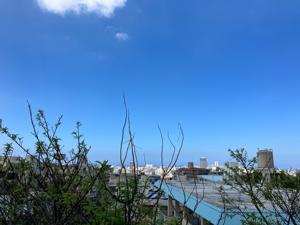

うるがいの話 ある日
最新: オバァの苦言は耳にアツイ！！【うるがいの話 ある日】とは 一日だけのプログです
『うるがいの話』の最新一日だけのプログで、通信料が少なく経済的だ。カニの画像をクリックすると全ての日付が載る『うるがいの話』サイトを表示します
|
|
【うるがいの話】 うるがい(ｳﾙｶﾞｲ urugai)とは、『もずくがに』の名前でとても大きくなります。 |
|---|---|
|
|
【カミマヤーの話】 猫のことを方言でマヤーといいます。カミマヤー（kamimayaa）とは、神の猫のことです。 |
|
【たながぁの音楽】 たながぁ（ﾀﾅｶﾞｰ tanagaa）とは手長えびのことで、何種類かあり大きいのは車 エビぐらいになります。 |

|
【ぶながぁの話】 ぶながぁ(ﾌﾞﾅｶﾞｰ bunagaa)とは、赤い髪の毛、赤い身体、そして身長は１ｍ２０ｃｍ ぐらい、川の蟹を食べているの目撃された。場所は沖縄県国頭郡大宜味村のと ある村僕の隣近所に住んでいる爺さんから、聞いた話です。 |
|
|
【ギーマの話】 ギーマ(giima)とは、山原の里山に咲くスズランに似た、 花を付けます。実は食べられます、 気が付くと口の周りが紫になっています。 |
2023年08月22日 (火）オバァの苦言は耳にアツイ！！
15:22

オフラインの時の、旅行などのまとめ作業を終えファイリングしようと空いて
いるフォルダーの箱を、ゴソゴソしていたら何やら本のコピー（２０１１年頃
）が一枚あった。ネットで少し調べたが、本の分からず。グーグルのＯＣＲ化
も利用できるようになったので、ついでなので載せる事にした。ユタと呪文の
経験を同じようにしたのでコピーしたのかな？、いまとなっては分からない。
ウンメーのように亡くなりたいな・・・・・・・。
とある本から、引用 ９４頁と９５頁
私が大好きだったオバァは、見えない物が見えたり正夢を見たりと、多少霊媒
体質だった。ユタの知人もいたようだが、それがクセモノだった。ある日、ユ
タの知人の勧めで徳のあるというユタに見てもらうことになった。同行した母
が、当時を振り返って話した。そのユタは、オバァと母を見るなり、机をバン
バン叩き方言で恫喝したそうである。「それ見たことか！おまえ達の行いが悪
いからそうなったのだ！」なんのことかわからずきょとんとするオバァ達にか
まわず、家族の様子をズバズバ言い当てるユタ。
オバアは真っ青になったが、母は気づいていた。ユタの知人が家の様子を進言
していたことに。そこで母は畏まってひと言、「すると、うちのウサギが生ま
れてすぐに死んだのもそのせいですか？」
「それだ！すでに災い事が始まっておるのだ」
母は心の中で大笑いしたという。なぜならうちでウサギなど飼っていなかった
から。「王家の遺産を独り占めしようとするから、先祖が怒っているのだ。災
いを避けるためには、どこそこでウグヮン（御願）をしなければならない」王
家の遺産などではなく、家族が必死で蓄財してきたのだが、そんなことは関係
ないらしい。とにかくそのユタを連れて、県内各地にある拝所巡りをしろ、と
言うわけである。当然のことながら、タダではない。莫大な時間とお金がかか
るのだ。ユタ買いで財産を失うとはそういうことだ。もちろんオバァと母が拝
所巡りに行くことはなかったし、家族に災いなど降り掛かることもなかった。
この話を聞いて、あらためて思い出したのが、不思議な呪文で身体中の発疹な
どを治してくれたウンメーの姿だ。母に開いてみると、ウンメーはユタではな
く、その呪文（まじない）は沖縄に古くから伝わるもので、オジィも扱えたと
いう。ある日、母にも伝授されたが、それは短い呪文を十三回一息で唱えると
いうものだったらしい。しかし戦後育ちの母は、その呪文でなぜ発疹が治るの
か合理的に理解できず、実践さえしなかった。今ではその呪文さえ忘れてしま
ったという。おかげで私は一族の秘伝を継承するチャンスを失ったことになる
。
私のなかに残っているウンメーの最後の記憶―それはカジマヤーの翌年のこと
だった。ある晩、ウンメーは親戚一同を集め、みんなの前でこう言ったという
。「私はもう長くない。親戚皆、争うことなく、末長く、仲よく暮らしてほし
い」いつもの方言で静かに語り聞かせると、疲れたからと言って、ウンメーは
自分の部屋に戻っていった。親戚一同が帰った後も、ウンメーの様子を気にか
けた父や母達は起きていた。気分がすぐれないのなら、起きたらすぐに病院に
連れていこうと、ウンメーがいつも起きる午前三時過ぎに部屋に様子を見にい
ったという。しかし、ウンメーはすでに息を引き取った後だった。私が目を覚
ました頃には、すでに再招集された親戚達が、家の中を忙しそうに立ち回って
いた。ウンメーはいつもの自分の部屋にも、居間にもいなかった。仏間に移さ
れたウンメーは、カジマヤーの黄色い紅型の着物姿で、物言わず横たわってい
た。
（おりべ・えりあ）
１５時１５分 ビットコインの総資産 ￥１１、０５７（↑２１）